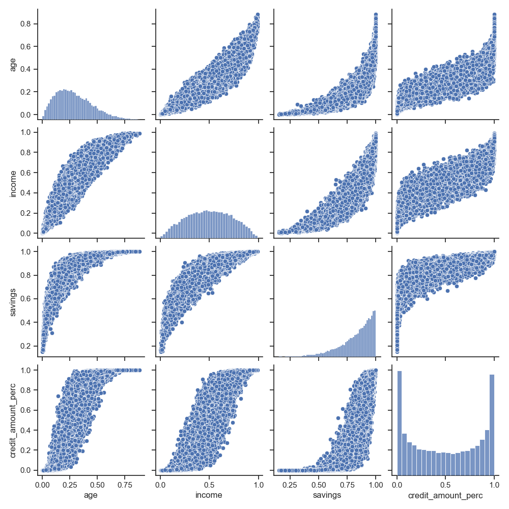

Sample and Test Data
The package provides some functionality to create test data for the different classes. For example, for first simple tests of some fancy calibration method one would like to have a bunch of instruments together with certain prices. Here, the methods for the creation may be of special use.
Some classes provide a _create_sample method. This method can be used to create a sample of the respective classes.
Spreadcurves
- class rivapy.sample_data.market_data.spread_curves.SpreadCurveSampler(sector_weights=None, country_weights=None)[source]
Bases:
objectThis class samples spreadcurves used to price bonds. It creates different curves according to
issuer rating (for all ratings defined in
rivapy.tools.enums.Rating)currency (for all currencies defined in
rivapy.tools.enums.Currency)country (for all countries defined in
rivapy.tools.enums.Country)esg rating (for all ratings defined in
rivapy.tools.enums.ESGRating)sector (for all sectors defined in
rivapy.tools.enums.Sector)securitization level (only SENIOR_SECURED, SENIOR_UNSECURED and SUBORDINATED are currently handled)
An object of this class provides the method
get_curve()that returns a spread curve that may be adequate to price a bond of the given specification and issuer.As basis for the curve creation this method uses the Nelson-Siegel Parametrization, see
rivapy.marketdata.curves.NelsonSiegelfor a more detailed description of this parametrization. Each curve is constructed so that for all of the features above fixed, the curve is consistet w.r.t. the issuer rating in the sense that a curve of a higher rating is strictly below the curve of a lower rating.The construction is as follows:
We create two Nelson-Siegel parameterized curves by sampling the Nelson-Siegel parameters
- get_curve(issuer: Issuer, bond: PlainVanillaCouponBondSpecification)[source]
- sample_new(ref_date: datetime) SpreadCurveCollection[source]
- class rivapy.sample_data.market_data.spread_curves.SpreadCurveCollection(ref_date: datetime, rating_curve: Tuple[Union[FactoryObject, dict, float], Union[FactoryObject, dict, float]], currency_spread: Dict[str, Tuple[Union[FactoryObject, dict, float], Union[FactoryObject, dict, float]]], esg_spreads: Dict[str, float], rating_weights: Dict[str, float], sector_spreads: Dict[str, Tuple[Union[FactoryObject, dict, float], Union[FactoryObject, dict, float]]], country_curves: Dict[str, Tuple[Union[FactoryObject, dict, float], Union[FactoryObject, dict, float]]], sec_level_spreads: Dict[str, Tuple[Union[FactoryObject, dict, float], Union[FactoryObject, dict, float]]])[source]
Bases:
FactoryObjectParametrization for a collection of spreadcurves. The spreadcurve for a given bond is created by a linear combination of different spreadcurves that belong to certain bond features
For a each rating \(r^{\star}\) (issuer rating) a spreadcurve \(S_{r^\star}\)
For each currency \(c^{\star}\) a spreadcurve \(S_{c^\star}\)
For each ESG rating
Sector
Country
Securitization Level
- Parameters
ref_date (dt.datetime) – _description_
rating_curve (Tuple[Union[FactoryObject, dict, float], Union[FactoryObject, dict, float]]) – _description_
currency_spread (Dict[str, Tuple[Union[FactoryObject, dict, float], Union[FactoryObject, dict, float]]]) – _description_
esg_spreads (Dict[str, float]) – _description_
rating_weights (Dict[str, float]) – _description_
sector_spreads (Dict[str, Tuple[Union[FactoryObject, dict, float], Union[FactoryObject, dict, float]]]) – _description_
country_curves (Dict[str, Tuple[Union[FactoryObject, dict, float], Union[FactoryObject, dict, float]]]) – _description_
sec_level_spreads (Dict[str, Tuple[Union[FactoryObject, dict, float], Union[FactoryObject, dict, float]]]) – _description_
- get_curve(issuer: Issuer, bond: PlainVanillaCouponBondSpecification)[source]
Credit Default Data
- class rivapy.sample_data.market_data.credit_default.CreditDefaultData[source]
Bases:
object- static sample(n_data: int, seed: Optional[int] = None, constant=- 1.0, cov: Optional[ndarray] = None) DataFrame[source]
Sample credit default data.
Return a pandas DataFrame that contains some credit features together with the default probability and an indicator if the default occured (1) or if the credit did not default (0). The data is generated by a logistic regression where the pd for a credit is computed by logistic regression (with fixed coefficients). The following features are used
\(x_{\mbox{age}}\) age of lender, sampled from beta distribution (a=2, b=5)
\(x_{\mbox{income}}\) income of lender, sampled from beta distribution (a=2.0, b=2.0)
\(x_{\mbox{savings}}\) savings of lender, sampled from beta distribution (a=5.0, b=1.0)
\(x_{\mbox{amount}}\) amount of credit, sampled from beta distribution (a=0.5, b=0.5)
\(x_{\mbox{region}}\) one hot encoded feature indicating one of three regions the lender lives in. The region are uniformly distributed
The single features (exception is the region that is drawn independently of the other features) are related via a Gaussian copula. The following figure showsthe distributions and pairplots for a generated sample of features.
After the features have been generated, logistic regression is used to compute default probabilities (pd) via the formula
\[pd = \frac{1}{1+e^{x_{\mbox{age}}}\]- Parameters
n_data (int) – Number of data sampled (number of rows of final DataFrame).
seed (int, optional) – The seed used internally, if None, no seed will be set. Defaults to None.
constant (float, optional) – Constant used in logistic regression that determines the overall level of the pd. Defaults to -1.0.
cov (np.ndarray, optional) – Covariance matrix used in the Gaussian copula. Defaults to None (thena flat covariance of 0.95 is used).
- Returns
DataFrame with features, default probabilities and default indicator.
- Return type
pd.DataFrame
{kind=link}